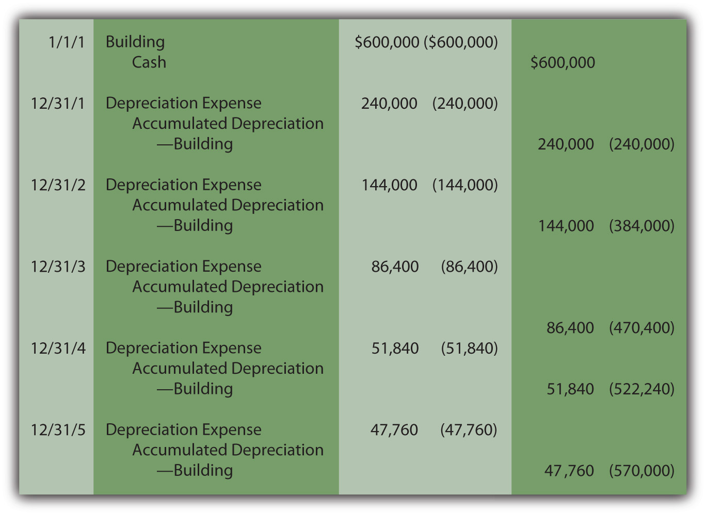
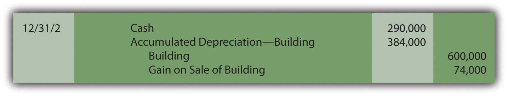
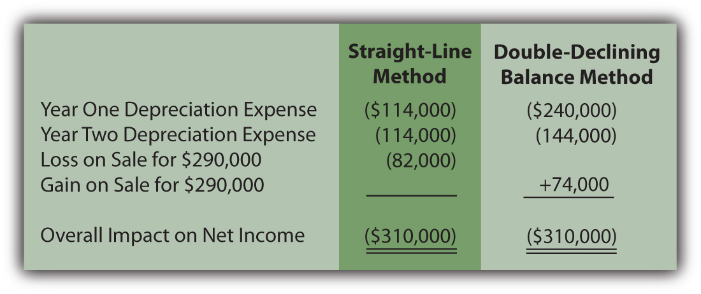
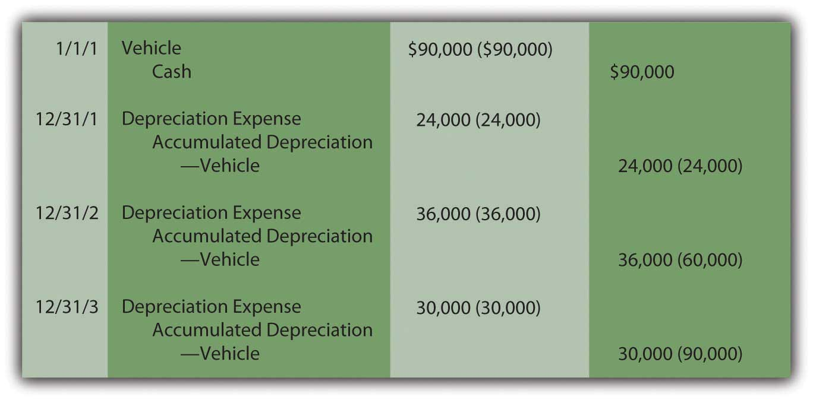
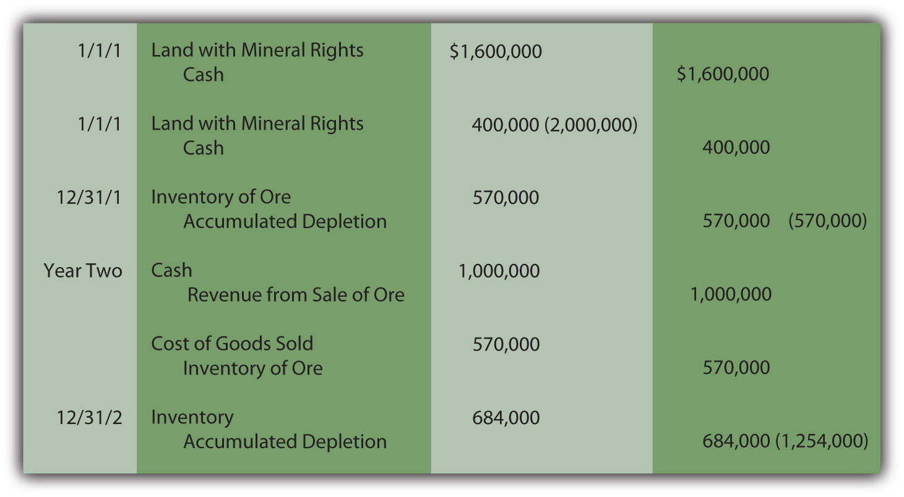
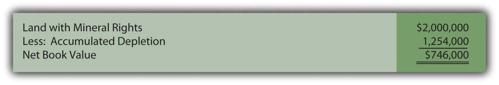

At the end of this section, students should be able to meet the following objectives:
Question: Straight-line depreciation certainly qualifies as systematic and rational. The same amount of cost is assigned to expense during each period of use. Because no specific method is required by U.S. GAAP, do companies ever use alternative approaches to create other allocation patterns for depreciation? If so, how are these additional methods justified?
Answer: The most common alternative to the straight-line method is accelerated depreciationAny method of determining depreciation that assigns larger expenses to the initial years of an asset’s service and smaller expenses to the later years; it is justified by the assumption that newer assets generate more revenues than older assets do., which records a larger expense in the initial years of an asset’s service. The primary rationale for this pattern is that property and equipment often produce higher revenues earlier in their lives because they are newer. The matching principle would suggest that recognizing more depreciation in these periods is appropriate to better align the expense with the revenues earned.
A second justification for accelerated depreciation is that some types of property and equipment lose value more quickly in their first few years than they do in later years. Automobiles and other vehicles are a typical example of this pattern. Recording a greater expense initially is said to better reflect reality.
Over the decades, a number of equations have been invented to mathematically create an accelerated depreciation pattern, high expense at first with subsequent cost allocations falling throughout the life of the property. The most common is the double-declining balance method (DDB)An accelerated method that computes depreciation each year by multiplying the asset’s book value (cost less accumulated depreciation) times two divided by the expected useful life.. When using DDB, annual depreciation is determined by multiplying the book value of the asset times two divided by the expected years of life. As book value drops, annual expense drops. This formula has no internal logic except that it creates the desired pattern, an expense that is higher in the first years of operation and less after that. Although residual value is not utilized in this computation, the final amount of depreciation recognized must be manipulated to arrive at this proper ending balance.
Depreciation for the building bought above for $600,000 with an expected five-year life and a residual value of $30,000 is calculated as follows if DDB is applied.
(cost – accumulated depreciation) × 2/expected life = depreciation expense for periodYear One:
($600,000 – $0) = $600,000 × 2/5 = $240,000 depreciation expenseYear Two:
($600,000 – $240,000) = $360,000 × 2/5 = $144,000 depreciation expenseYear Three:
($600,000 – $384,000) = $216,000 × 2/5 = $86,400 depreciation expenseYear Four:
($600,000 – $470,400) = $129,600 × 2/5 = $51,840 depreciation expenseYear Five:
($600,000 – $522,240) = $77,760,so depreciation for Year Five must be set at $47,760 to arrive at the expected residual value of $30,000. This final expense is always the amount needed to arrive at the expected residual value.
Note that the desired expense pattern has resulted. The expense starts at $240,000 and becomes smaller in each subsequent period.
Figure 10.6 Building Acquisition and Double-Declining Balance Depreciation
When using accelerated depreciation, book value falls quickly at first because of the high initial expense levels. Thus, if the asset is sold early in its life, a reported gain is more likely. For example, in the earlier example where straight-line depreciation was applied, the building was sold after two years for $290,000 creating an $82,000 loss because the book value was $372,000. The book value was high in comparison to the amount received.
With DDB, if the same building had been sold on December 31, Year Two for $290,000, a $74,000 gain results because book value has dropped all the way to $216,000 ($600,000 cost less $384,000 accumulated depreciation). Accelerated depreciation creates a lower book value, especially in the early years of ownership.
Figure 10.7 Building Sold after Two Years
Although the annual amounts are quite different, the overall net income is never affected by the allocation pattern in use. In this example, a building was bought for $600,000 and later sold after two years for $290,000. Thus, net income for the entire period of use must be reduced by the $310,000 difference regardless of the approach applied.
Figure 10.8 Depreciation Methods—Overall Impact on Net Income
Link to multiple-choice question for practice purposes: http://www.quia.com/quiz/2092939.html
Question: The two methods demonstrated here for establishing a depreciation pattern are based on time, five years to be precise. In most cases, though, it is the physical use of the asset rather than the passage of time that is actually relevant to this process. Use is the action that generates revenues. How is the depreciation of a long-lived tangible asset determined if usage can be measured? For example, assume that a limousine company buys a new vehicle for $90,000 to serve as an addition to its fleet. Company officials expect this limousine to be driven for three hundred thousand miles and then have no residual value. How is depreciation expense determined each period?
Answer: Depreciation does not have to be based on time; it only has to be computed in a systematic and rational manner. Thus, the units-of-production method (UOP)A method of determining depreciation that is not based on the passage of time but rather on the level of actual usage during the period. is another alternative that is occasionally encountered. UOP is justified because the periodic expense is matched with the work actually performed. In this illustration, the limousine’s depreciation can be computed using the number of miles driven in a year, an easy figure to determine.
($90,000 less $0)/300,000 miles = $0.30 per mileDepreciation is recorded at a rate of $0.30 per mile. The depreciable cost basis is allocated evenly over the miles that the vehicle is expected to be driven. UOP is a straight-line method but one that is based on usage (miles driven, in this example) rather than years. Because of the direct connection between the expense allocation and the work performed, UOP is a very appealing approach. It truly mirrors the matching principle. Unfortunately, measuring the physical use of most assets is rarely as easy as with a limousine.
For example, if this vehicle is driven 80,000 miles in Year One, 120,000 miles in Year Two, and 100,000 miles in Year Three, depreciation will be $24,000, $36,000, and $30,000 when the $0.30 per mile rate is applied.
Figure 10.9 Depreciation—Units-of-Production Method
Estimations rarely prove to be precise reflections of reality. This vehicle will not likely be driven exactly three hundred thousand miles. If used for less and then retired, both the cost and accumulated depreciation are removed. A loss is recorded equal to the remaining book value unless some cash or other asset is received. If driven more than the anticipated number of miles, depreciation stops at three hundred thousand miles. At that point, the cost of the asset will have been depreciated completely.
Link to multiple-choice question for practice purposes: http://www.quia.com/quiz/2092930.html
Question: The cost of land is not depreciated because it does not have a finite life. However, land is often acquired solely for the natural resources that it might contain such as oil, timber, gold or the like. As the oil is pumped, the timber harvested or the gold extracted, a portion of the value is physically separated from the land. How is the reported cost of land affected when its natural resources are removed?
Answer: Oil, timber, gold and the like are “wasting assets.” They are taken from land over time, a process known as depletionA method of allocating the cost of a wasting asset (such as a gold mine or an oil well) to expense over the periods during which the value is removed.. Value is literally removed from the asset rather than being consumed through use as with the depreciation of property and equipment. The same mechanical calculation demonstrated above for the units-of-production (UOP) method is applied. The 2008 financial statements for Massey Energy state that “depletion of mining properties owned in fee and leased mineral rights is computed using the units-of-production method over the estimated proven and probable reserve tons.”
Because the value is separated rather than used up, depletion initially leads to the recording of inventory (such as oil or gold, for example). An expense is recognized only at the eventual point of sale.
As with other types of property and equipment, historical cost is the sum of all normal and necessary expenditures to get the wasting asset into condition and position to generate revenues. To illustrate, assume that at the beginning of Year One, land is acquired for $1.6 million cash while another $400,000 is spent to construct a mining operation. Total cost is $2 million. The land is estimated to hold ten thousand tons of ore to be mined and sold. The land will be worth an estimated amount of only $100,000 after all the ore is removed. Depletion is calculated as $190 per ton ([$2,000,000 cost less $100,000 residual value]/10,000 tons). It is a straight-line approach based on units held, an allocation that follows the procedures of the units-of-production method.
Assume that 3,000 tons of ore are extracted in Year One and sold in Year Two for $1 million cash. Another 3,600 tons are removed in the second year for sale at a later time. Depletion is $570,000 in Year One ($190 × 3,000 tons) and $684,000 in Year Two ($190 × 3,600 tons).
Figure 10.10 Depletion of Wasting Asset
For depreciation, expense is recognized immediately as the asset’s utility is consumed. With depletion, no expense is recorded until the inventory is eventually sold.
After two years, this land is reported on the company’s balance sheet at a net book value of $746,000 based on its historical cost of $2 million. The inventory of ore is reported as an asset at $684,000 until sold.
Figure 10.11 Book Value of Land with Mineral Rights
Link to multiple-choice question for practice purposes: http://www.quia.com/quiz/2092931.html
Cost allocation patterns for determining depreciation exist beyond just the straight-line method. Accelerated depreciation records more expense in the earlier years of use than in later periods. This pattern is sometimes considered a better matching of expenses with revenues and a closer image of reality. The double-declining balance method is the most common version of accelerated depreciation. Its formula was derived to create the appropriate allocation pattern. The units-of-production method is often used for property and equipment where the quantity of work performed can be easily monitored. This approach is also used in recording the depletion of wasting assets such as oil wells and silver mines.